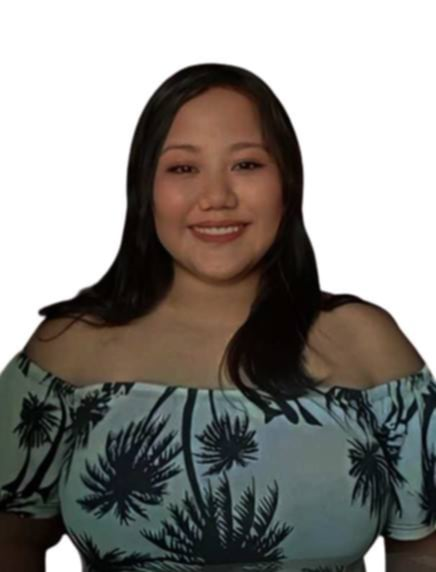

My Ingormation

Cristine Fabro
Address:Bani, Sta.lucia, Ilocos Sur
Birthday:September 19, 2003
Course & YearBSCS-3A
React
- Fabro, Cristine
- Velasco, Jenny Lou
- Taay, Janeece Mae
Jobs to take
- Software Engineer
- becouse of good pay,high demand,and the opportunity to work on innovative projects.
- Nurse
- to help other people,job security, and a variety of specializations.
- Photographer
- photographer can be both a challenger and fulfilling career, you'll have the opportunity to work with people,travel to new places, and make a living doing something you love.